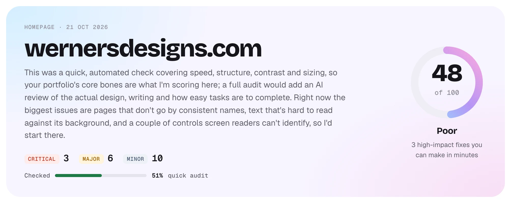
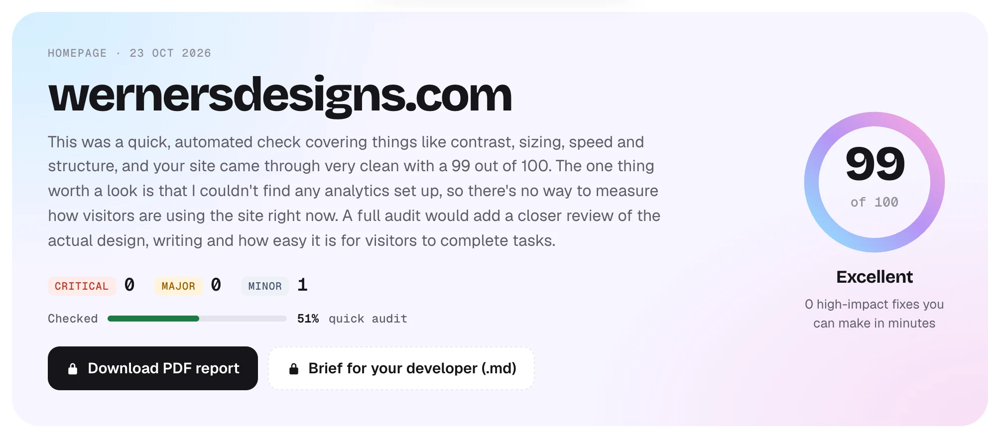
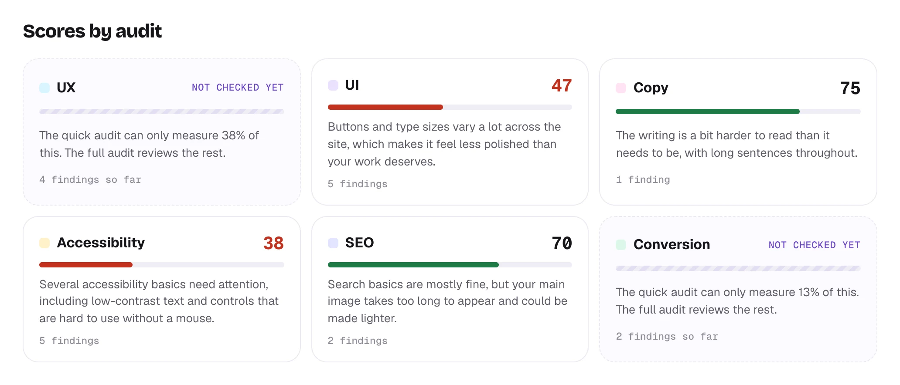
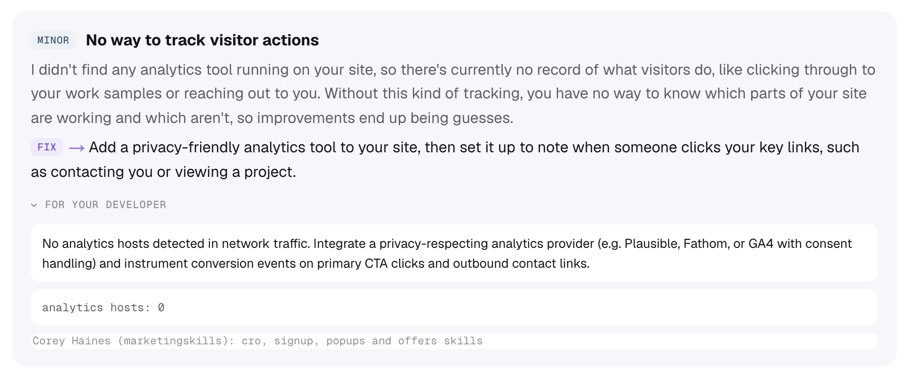
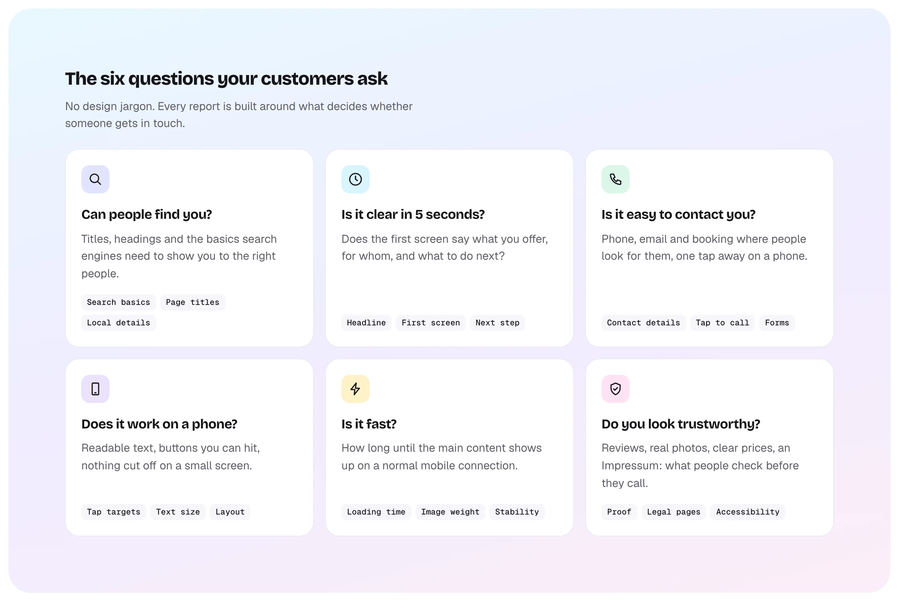
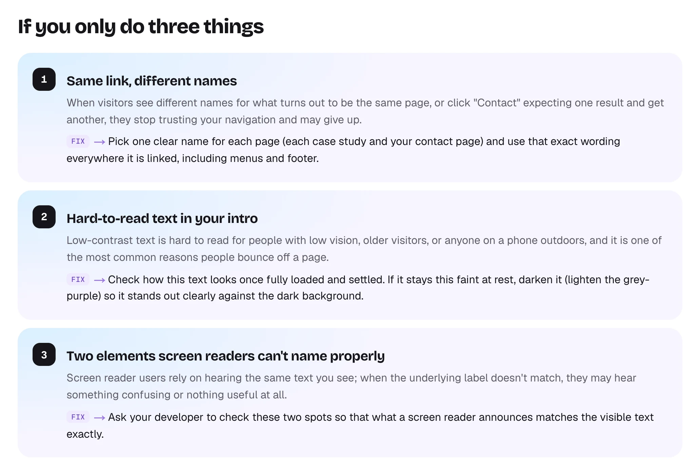
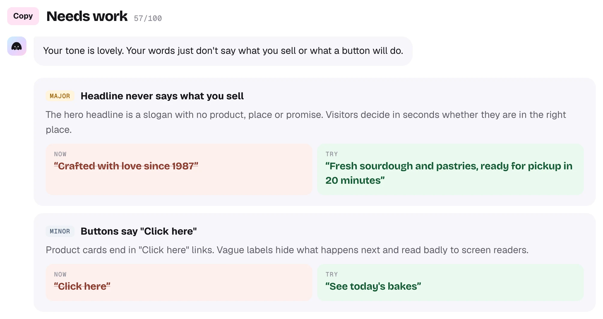
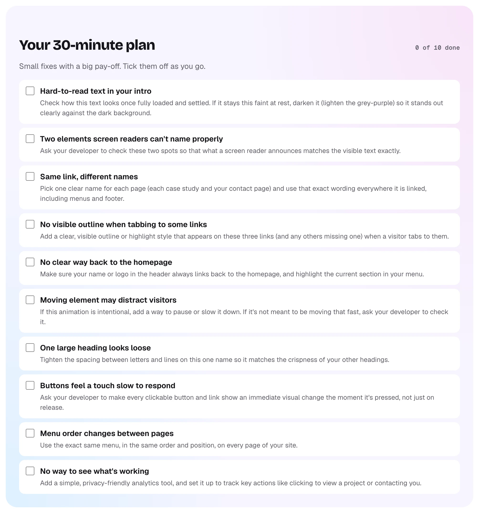
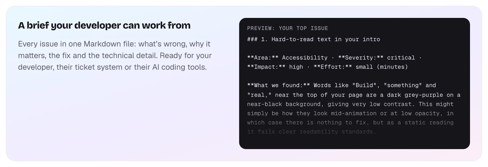
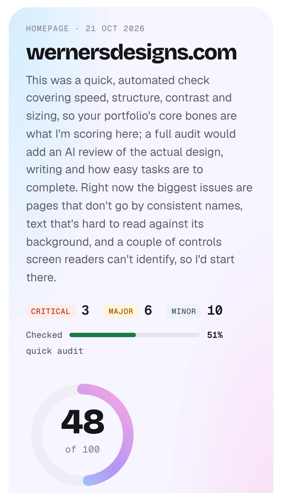

01 · Brief
A small business can’t easily get a designer to review its website. Free SEO tools only check whether Google can read it. Juno gives owners that kind of review, with the fixes in plain words. It was also my test of how far one designer can take a real product alone.
02 · Outcome
Juno is live at junoknows.design. I designed and built it in 4 days with Claude Code. It reviews a website against a rubric of 68 checks. My own site went from 48 to 99 over three rounds of fixes.
I used Juno on my own site.
On 21 October I ran a quick audit on this site’s homepage. It scored 48 out of 100, which Juno calls Poor. It found 19 issues: 3 critical, 6 major and 10 minor. A quick audit only measures in code, so it checked 51%.
That day I fixed small things, like 44px tap targets and instant press feedback. The next day I took on the design and copy findings. The site now has one type scale of eight steps. Almost all its spacing sits on a 4px grid. No sentence on a case page runs past 20 words, and the pages load faster.


Not every finding held up at first. One critical finding was about words in my intro that start dim and sharpen as you scroll. Juno measured them while dim, at a contrast of 1.42:1, and its report said they might be mid-animation. They were. I still made them start brighter, at 3.3:1, so nobody meets them that faint.
On 22 October, with the first fixes live, Juno scored the site 56. On 23 October I worked through what was left: keyboard reach, focus rings, button styles, type sizes and alignment. Juno now scores it 99. The one finding left is analytics, because Juno doesn’t recognise GoatCounter, the tool this site uses.
What I did.
I designed and built Juno’s audit engine, scoring, report and website. Juno herself is a 3D jellyfish who talks you through each audit. She follows the pointer and respects a request for less motion. The site and its reports work in English and German. Each report is written in the language the audit was started in.
I designed straight into code with Claude Code. The rubric is code too: every check has a question, a pass line, a weight and a source. Sources include NN/g and WCAG. Tests guard the scoring: a site that passes everything must score 100. The code checks the German copy against the English, so a missing translation shows up as an error.
One link in, six answers out.
-
Capture
One browser visit records the site at desktop, tablet and phone widths. It only reads pages and never sends a form.
-
Measure
Code measures 44 of the 68 checks, like contrast and tap targets. There is no AI in this step.
-
Judge
Claude judges what code can’t see, like whether a headline is clear. Each judge runs three times, and the median verdict wins.
-
Write
A second model rewrites each finding for the owner, in Juno’s voice. It never changes a verdict or a score.
The judges also use open-source guides by Anthropic, Vercel and Corey Haines.
Key decisions.
No score without evidence
A finding without evidence never moves the score. Neither does a verdict Juno isn’t sure of. Both are set aside for a person to confirm. The overall score shows how much was checked. Where too little of an audit was checked, its tile says “Not checked yet” and shows no score.

Two readers for every finding
The owner gets each finding in plain words, with the fix. That version has no code, colour codes or acronyms. Below it, a folded note gives their developer the exact selectors and values.

The six questions customers ask
Inside, the report has six audits with expert names, like UX and SEO. On the homepage, I framed the audit as six questions a customer asks. Can people find you? Is it clear in 5 seconds? Each card lists the checks behind its question, with no design jargon.

What to fix first
Each finding is ranked by how serious it is and how widely it shows. After the scores, the report picks the three that matter most, no more than two from one audit. When two findings matter equally, the quicker fix comes first.

Final designs.

Copy, rewritten
Where Claude judges the copy, a weak line gets a “Now” and a “Try”. From the example report. The bakery is made up.
A 30-minute plan
Every fix that takes minutes goes in one checklist, sorted by priority.
A brief for the developer
The whole list in one Markdown file, ready for a ticket or an AI coding tool.